Member Portal for a Net-New Federal Program
2024
I designed the member-facing portal for the Medicare Prescription Payment Plan. The everyday surface for 20M+ eligible Medicare members across Humana, Express Scripts, and Cigna to support $84M+ in managed billing.
Role
Founding Designer
Company
Paytient
Client
Humana
Express Scripts
Cigna
Shipped
October 2024
My role
I was the Founding Product Designer on this project to ship this work. I started alongside a Product Manager and Staff Engineer to build this product and the design system from the ground up in less than 10 months.
Context
The Medicare Prescription Payment Plan was a net-new federal program that allowed seniors on Part D to spread their out-of-pocket prescription costs over the calendar year instead of paying in full at the pharmacy.
Paytient stepped in to create a white-labeled product offering to support the end-to-end needs from this member facing portal to a calculator tool and CRM portal for customer reps to use when supporting members.
Problem
Being a new program created two problems:
Medicare Part D Plan providers needed a member-facing portal to support this new program so they could support enrollment and stay compliant under federal guidance.
Medicare Part D members needed an accessible, clear, and intuitive way to opt-in, see prescription claims, pay balances, and manage their account.
Insight
The member portal's job was to answer two main questions: what do I owe and how do I pay it. Other information was still available, but was not the primary focus.
Process
Before any design work began, I worked through nearly 100 pages of federal guidance to understand what the program required and where there was room to design. From there, I partnered with an internal product to concept the opt-in flows and portal experience, building a white-labeled system that plan providers could brand as their own.
Because the plan providers were our clients, I collaborated directly with their product teams to make the handoff from their existing systems feel seamless to members. A member moving from a plan provider's site into this portal shouldn't feel like they'd left.
Research
This was an incredibly important step of the process. Most Part D members were 65+ and had low tech literacy, so getting constant feedback from members was essential when building this product for them.
I ran 47 interviews with members and caregivers in-person in Columbia, MO. This research revealed several key findings:
81% of members are touchscreen-first.
Most remote participants joined on tablets, and in-person participants tried to interact with desktop screens by touch. Mobile and tablet layouts had to treat tapping as the primary interaction, with tap targets sized accordingly.
64% of members were confused by the terminology of financial products.
Participants asked "what does year to date mean" and "what does remaining mean" when looking at a spend tracker. Every piece of copy had to be reviewable against whether it added information or just added friction.
78% of members preferred to pay by card rather than by ACH.
Both for fraud protection and for the rewards. The payments experience had to treat cards as first-class without making bank account linking feel second-class.
Members wanted printable confirmations.
Nearly 50% mentioned printing screens after completing tasks, so download-to-PDF and printable statement paths had to be available throughout.
Final work
The minimal home page won because it matched what the research population actually wanted to do with the portal, which was to understand what I owe and how to pay it. The full dashboard expressed everything the product knew, but expressing everything is not a design virtue for a population already overwhelmed by Medicare and suspicious of the program's stigma. Moving spend tracking, claims detail, and out-of-pocket progress into dedicated tabs meant the information was still available to any member who wanted it, without being the first thing every member had to process on every login.
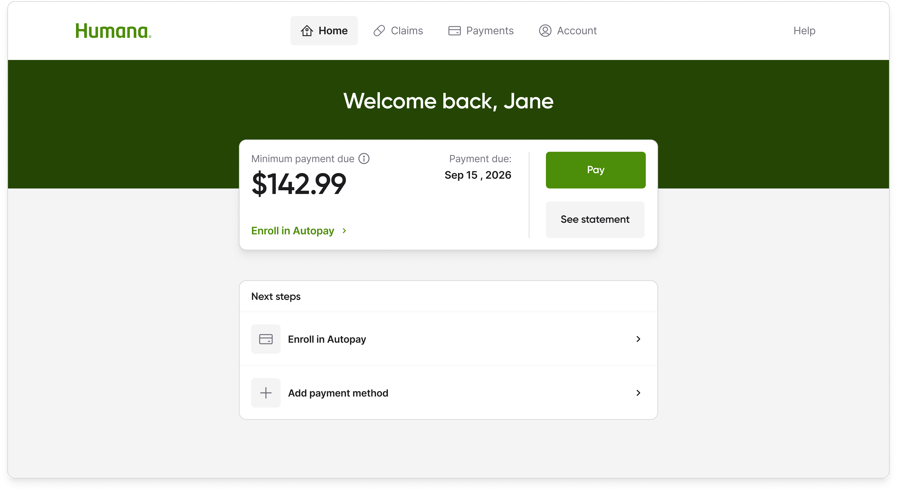
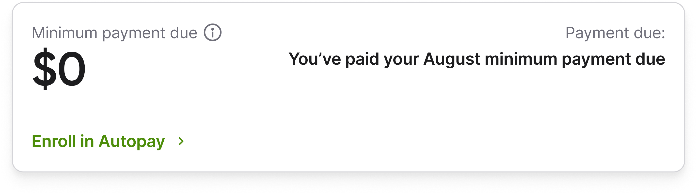
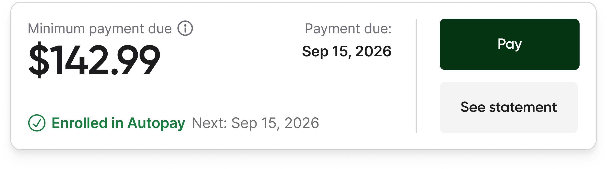
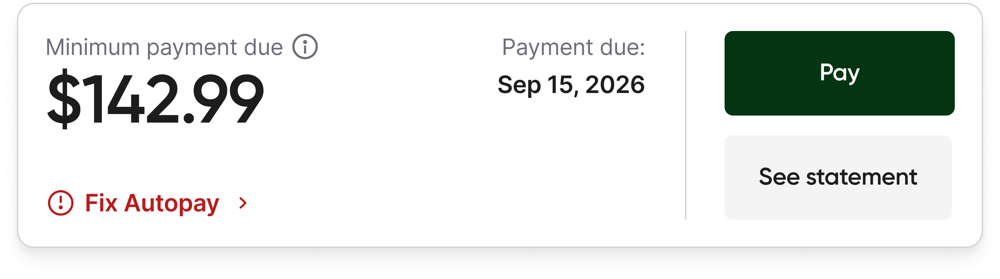
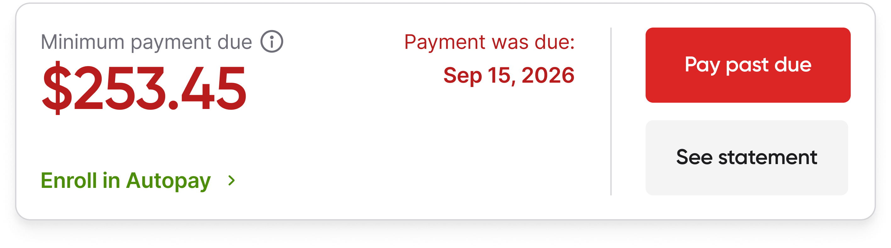
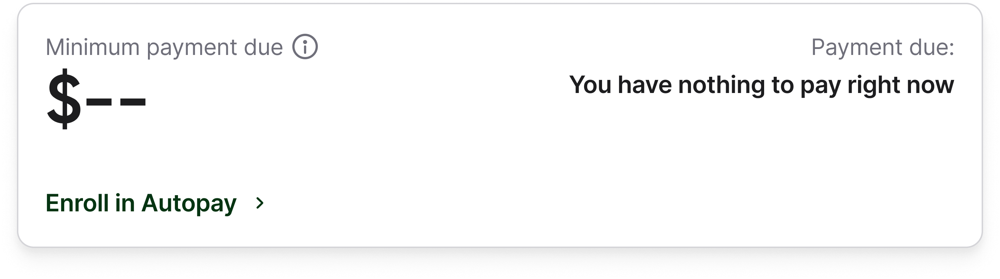
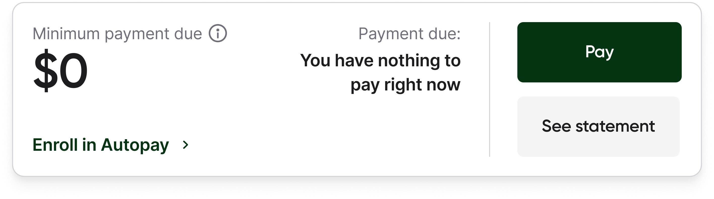
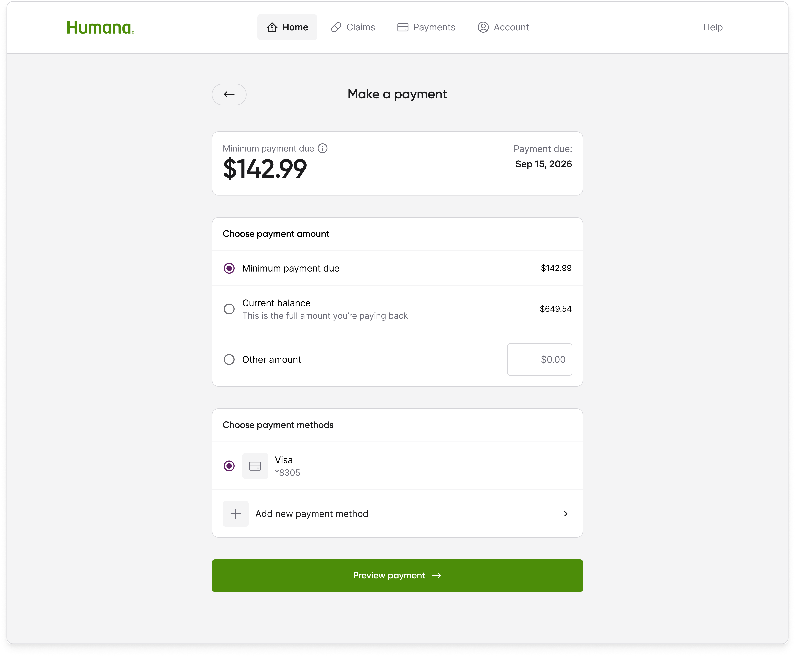
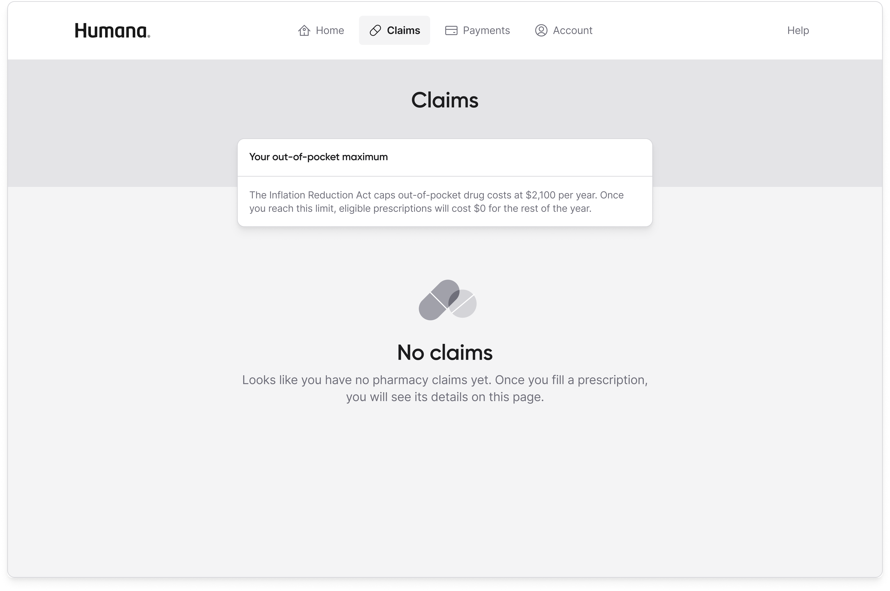
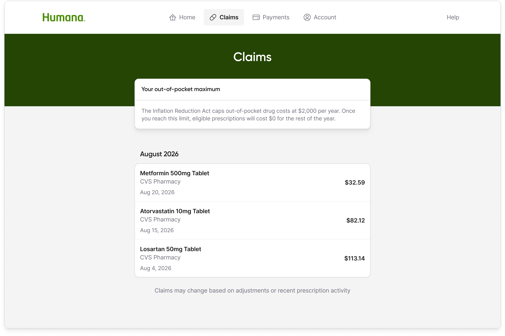
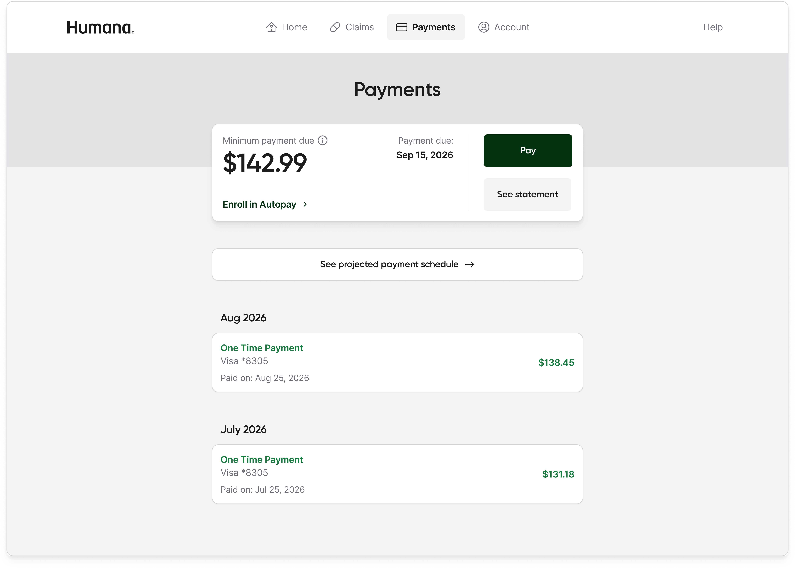
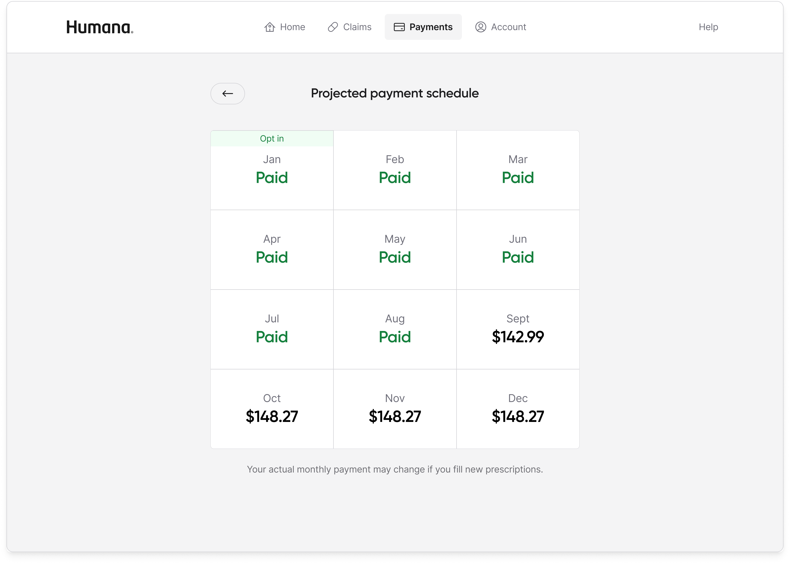
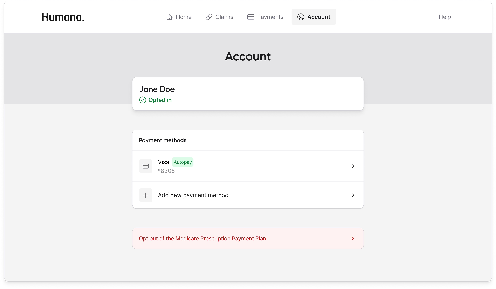
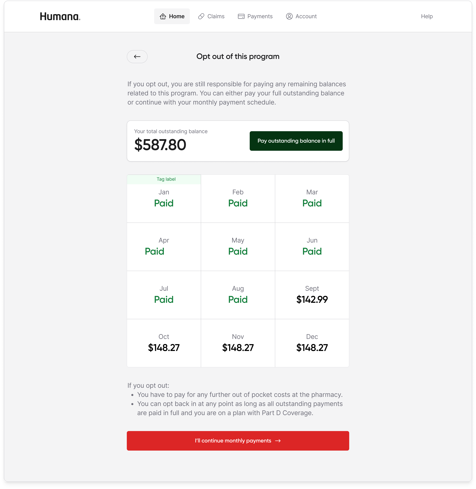
Result
The Medicare Prescription Payment Plan launched in October 2024 and is now available to 20M+ members (40% of the entire Medicare population) through Humana, Cigna, and Express Scripts.
20M+
Medicare members reached through Humana, Cigna, and other Part D sponsor partners, ~40% of the Medicare population.
95%
Of members found it easier to use and navigate than other Medicare sites.
$84M+
In managed billing.
33%
Of Paytient's total revenue.
"Paytient made it easier to pay for my prescription medications. Due to the high cost, I am able to pick up my prescriptions and pay for them over time on my schedule."
For a net-new federal program with no playbook, that number meant the product was doing its job.